Zweite Sphäre
zeigt zwischen synthetischem Material und organisch-typogrsfischer Gestaltung eine lyrische Welt die im Raum installiert sowie projiziert stattfindet. Im Zentrum steht die Suche nach dem Zufall in der vorgegebenen Form und dem Aushalten von Imperfektionen in einer Zeit von glatten Displays und reibungslosen, digitalen Interaktionen. Hannes Schlötelburg und Carl Riesselmann.
Zeiten:
21.10.—11.11.2025
Vernissage: 21.10.2025
Hanse48
Hansestraße 48,
24118 Kiel